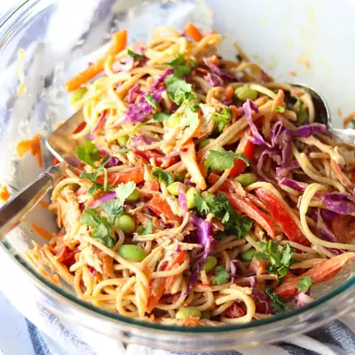

Thai Noodle Salad

Ingredients
- 8 ounces noodle of choice (e.g. spaghetti, rice noodles, linguine, or soba)
- 1 medium carrot, shredded
- 1 red bell pepper, thinly sliced
- 2 cups shredded red cabbage
- 1 cup edamame
- 1 cup shredded chicken
- 2 green onions, sliced
- 1/4 cup chopped cilantro, optional
- 1/4 cup chopped peanuts, optional
- 1/2 cup natural peanut butter
- 2 tablespoons low-sodium soy sauce
- 3-4 tablespoons rice vinegar
- 1 tablespoon sesame oil
- 1 tablespoon honey or maple syrup
- juice of 1 lime
- 1/4 cup warm water
Steps
- Cook the noodles according to the package instructions. Drain and rinse under cold water to stop cooking. Set aside.
- Prepare the Dressing:In a medium bowl, whisk together the peanut butter, soy sauce, rice vinegar, sesame oil, honey or maple syrup, lime juice, and warm water. Adjust consistency with more water if needed—it should be pourable but not too thin.
- In a large mixing bowl, combine the cooked noodles, shredded carrot, red bell pepper, purple cabbage, edamame, chicken, and green onions.
- Pour the dressing over the noodle and vegetable mixture. Toss until everything is evenly coated.
- Divide the noodle bowl into serving dishes. Top with chopped cilantro and peanuts if desired. Serve immediately, or chill in the fridge for a cold noodle salad.
Recipe by Min Kwon · Kidfriendly Meals, from MJ and Hungryman. Saved here for personal use; the original has the full notes, tips and photos. Open original